Understand Cluster Sets
A cluster is a group of conceptually similar documents existing together in a tree-type hierarchy. automatically applies a descriptive title to each document cluster without requiring user knowledge or input within the data set.
Cluster sets are groups of clusters that are visually represented through color coding in the concept wheel shown in the Visual Search dashboard.
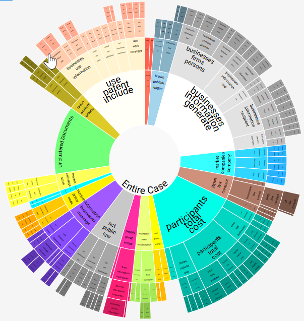
Clustering is based on an algorithm that finds the general major groupings and minor groupings of the data and presents cluster results in a balanced hierarchy. The number of cluster levels, size, and other settings can be adjusted before a cluster is created. You may choose to cluster the entire case or a selected saved search.
For more information about the concept wheel, see Work With the Visual Search Dashboard.
Before You Begin
Planning will bring you the greatest success in defining Analytics for each case.
-
You must understand your case data, case documents, and reviewer tasks. For example, review cases and discuss with reviewers the types of clusters and categories that will assist them as they do their jobs.
-
You can run the cluster on the entire document set. However, it is recommended to filter the document set before running your cluster. This will help to eliminate "junk" cluster sets and speed up the processing time.
-
For example, you may want to run a Tally on the document types and create a search to eliminate any documents not necessary for review.
Create a New Cluster Set
Clusters are based on the entire case or a specific search. The Analytics Settings screen allows you to manage cluster sets.
-
To create a cluster set, in the left bar click the Analytics Settings icon .
The Analytics screen appears.
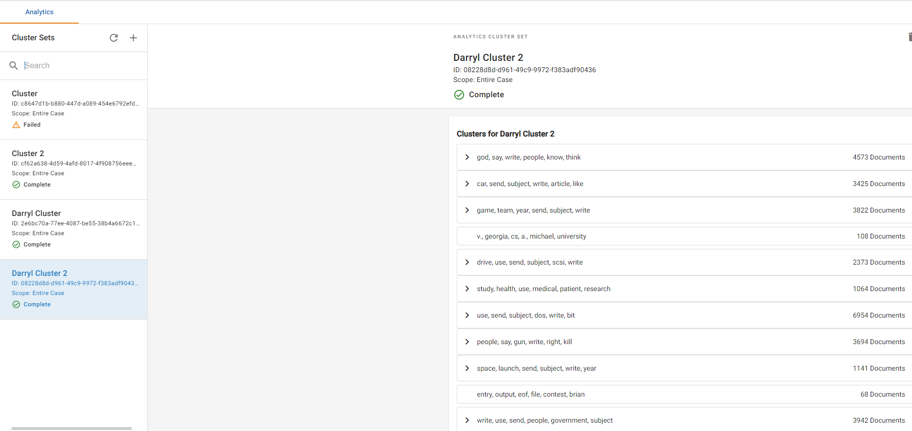
-
Click the + to the right of the Cluster Sets pane header. The Create New Cluster Set dialog box appears.
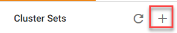
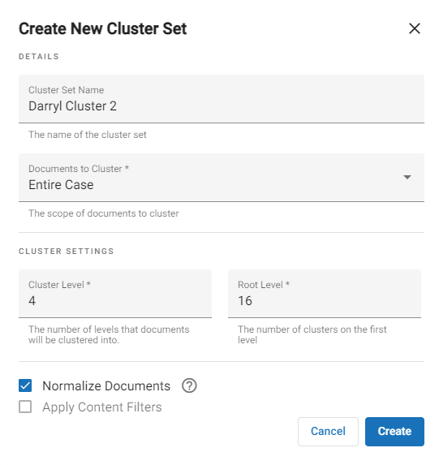
-
Fill in the fields as appropriate.

-
Enter a name for your cluster set that identifies the data.
-
Select the documents to cluster. Either the entire case or a saved search (results of a search saved in ).
-
Modify the Cluster settings as needed. For more information, see below:
|
Cluster Levels
|
The number of levels (rings) the documents will be clustered into. Select a cluster depth value from 1 to 7. The default value is 4.
This value defines the maximum hierarchy depth for clusters when they are created. It is used to determine if subclusters will be generated on any computed cluster.
No subclustering will be done if the computed cluster is already small, (usually less than 10 items).
|
|
Root Clusters
|
If needed, enter or select the number of root clusters from 15 to 30. The default value is 16.
-
Lower settings: generate clusters based on a relatively low level of conceptual similarity.
-
Higher settings: generate clusters based in a relatively high level of conceptual similarity.
If your case is small or contains few identifiable topics, the number of root clusters may be lower than 15.
|
-
Normalize documents is checked by default. You have the option to uncheck.
|

|
Note: Normalize documents enables document normalization/lemmatization. Word normalization should improve the accuracy of clustering by determining the lemma (headword relative to the definition) of a word based on its intended meaning. This helps improve the handling of words which have multiple meanings. It may add extra processing time to your cluster set.
|
-
If you have created Content Filters, you can check the box to include them.
|

|
Note: To apply content filters, you must first go into Administration and set up the option. This will create a check box that you can select in the Create New Cluster Set dialog box. For more information, see Create and Manage Content Filters.
|
-
Click Create. The Confirm Cluster Creation dialog box appears. The dialog box will inform you whether there are any documents that do not contain extracted text. Those documents will not be included in the cluster set. Click Continue.
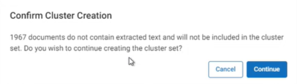
-
Wait for the cluster set to generate. You can either watch the generation process in Job Manager or simply wait for it to finish through the Analytics screen. This process may take a while to complete.
When it is complete, the cluster set details box will display Complete.

-
If the cluster set fails to generate, the details box will display Failed. In addition, an error message will appear.
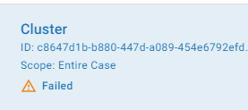
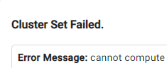
View the Cluster Set Tree
The Analytics Settings screen, accessed by clicking the icon in the left bar, allows you to view the cluster set tree.
To see the cluster set tree:
-
In the left bar click the Analytics Settings icon to create the Analytics for cluster sets. In the left pane, the list of cluster sets appears.
-
Select the appropriate cluster set and refresh the screen to show the cluster set tree.
|
|
Note: If the cluster set does not contain a cluster tree or has failed to generate the cluster tree, a message similar to the following will pop up:
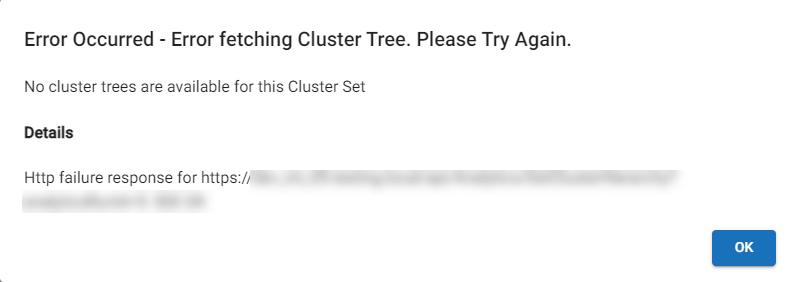
|
Delete a Cluster Set
-
Click the icon at the top right of the cluster set details list. The Delete Cluster dialog box appears.
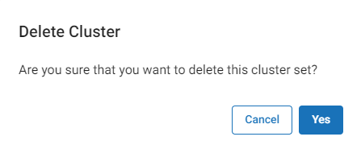
-
Click .
-
If there are clusters within the set that contain dependencies, an error message dialog box will display to indicate that the cluster(s) cannot be deleted. The following shows one cluster contains dependencies:
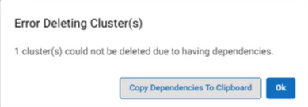
Either click 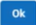
to close the dialog box, or to see what the dependency is, click 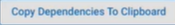
. A screen displays that shows the code of the particular dependency.
For example:
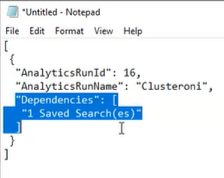
In this case, the dependency is that the cluster is part of a saved search.
Manage Analytics Permissions
Manage Analytics is the area in the System Manager where you govern how Analytics works. This is done through normal user permissions rather than Super Admin permissions.
- Click the Settings icon
 in the top-right corner of the screen. The Settings icon is a global button that displays in every module of the platform.
in the top-right corner of the screen. The Settings icon is a global button that displays in every module of the platform.
-
The System Manager opens. In the left pane of the System Manager, click Groups.
-
Click on the name of the group you would like to edit. The group profile opens on the right side of the screen.
-
Click the Edit icon  . You are now able to modify the users, permissions, and cases for the selected group.
. You are now able to modify the users, permissions, and cases for the selected group.
- On the Permissions tab, expand the Search and Review section, then assign the Manage Analytics permission. To learn more about the available permissions, see Permissions List.
-
Click Save.
Related Topics
Create and Manage Content Filters
Work With the Visual Search Dashboard